Histoire et éducation à la citoyenneté
05 / 12 réalité sociales
La christianisation de l'Occident
Ve au XIe siècle · L'influence de l'Église
- chrétienté
- Croisade
- culture
- éducation
- Église
- féodalité
- Occident
- pouvoir
- science

Mise en contexte
Le terme « Occident » fait référence à un territoire et à une civilisation. L'étude du Moyen Âge et de ses institutions, entre la fin de l'Empire romain et la Renaissance, permet de rendre compte de l'influence de la religion chrétienne dans la constitution de l'Occident. L'Église chrétienne s'impose alors aux pouvoirs féodaux, imprègne de ses valeurs la société et contribue au développement des savoirs. La religion demeure aujourd'hui une importante référence identitaire pour de nombreuses sociétés.
Concepts à l'étude
- Chrétienté : l'ensemble des territoires et des peuples qui partagent la religion chrétienne.
- Croisade : une expédition à la fois militaire et religieuse organisée par l'Église pour délivrer la Terre sainte.
- Culture : les croyances, les arts et les manières de vivre que les membres d'une société ont en commun.
- Éducation : la transmission des savoirs, assurée au Moyen Âge surtout par l'Église et ses écoles.
- Église : l'institution qui regroupe et dirige les chrétiens, avec le pape à sa tête.
- Féodalité : l'organisation de la société autour des liens entre seigneurs et vassaux, en échange de terres et de protection.
- Occident : le territoire et la civilisation de l'Europe de l'Ouest, unis par l'héritage romain et la religion chrétienne.
- Pouvoir : la capacité de commander et de se faire obéir, partagée au Moyen Âge entre les rois, les seigneurs et l'Église.
- Science : les connaissances sur le monde, conservées et copiées au Moyen Âge dans les monastères.
Situer dans le temps
« Le Moyen Âge occidental est traditionnellement situé entre la chute du dernier empereur romain d'Occident (476) et la découverte de l'Amérique (1492), même si ces deux dates sont arbitraires et restent discutables. » (Source : Encyclopédie Larousse)
Le christianisme et l'Empire romain
Les débuts du christianisme
Le christianisme est fondé avec la naissance et la mort de Jésus de Nazareth au 1er siècle. Après sa mort, ses disciples écrivent les Évangiles, documents très importants dans la religion catholique puisqu'ils racontent les enseignements et l'existence de leur Sauveur. Ils entreprennent donc de répandre son message dans l'Empire romain, qui continue d'agrandir ses frontières. Toutefois, avant de devenir la religion la plus pratiquée au monde, le christianisme parcourra un long chemin.
(Source : Alloprof)
La persécution des chrétiens
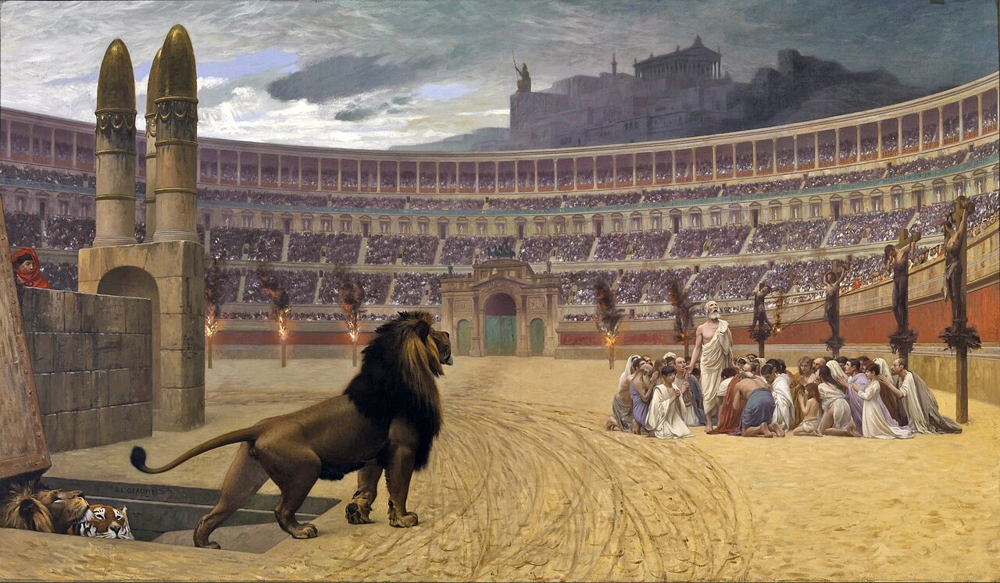
Source
Jean-Léon Gérôme, Jean-Léon Gérôme - The Christian Martyrs' Last Prayer - Walters 37113, Wikimedia Commons. Licence : Domaine public.Grâce à la conversion rapide des gens à cette nouvelle religion, le christianisme se répand rapidement dans l'Empire romain. Cependant, cette popularité croissante inquiète les dirigeants romains qui y voient une menace à leur autorité. Afin de freiner la progression de cette nouvelle religion, on se met donc à persécuter les chrétiens (leur faire subir des traitements cruels). Ceux-ci mourront en grand nombre durant ces années difficiles.
(Source : Alloprof)
La conversion de Constantin et l'édit de Milan
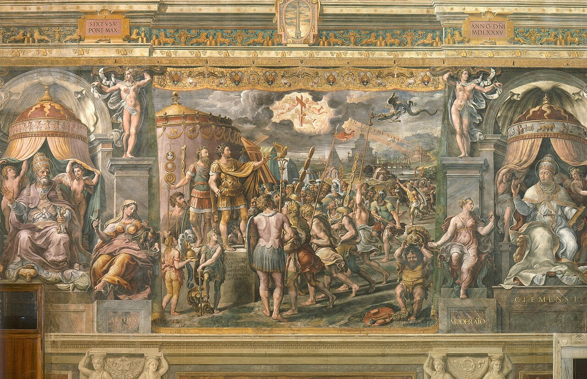
Source
School of Raphael, School of Raphael - Vision of the Cross, Wikimedia Commons. Licence : Domaine public.L'édit de Milan est intimement lié à la conversion de Constantin. Événement qui peut paraître surprenant et qui serait dû à un phénomène mystique : Constantin, alors qu'il était en guerre contre un rival, a vu dans le ciel une croix, puis il a reçu une vision lui disant qu'il gagnerait s'il apposait un signal chrétien sur les étendards de sa légion. In hoc signo vinces, lui aurait dit la vision : « Par ce signe tu vaincras », et le signe était le monogramme grec du Christ, le chrisme.
Aussi nommé « édit de Constantin », l'édit de Milan paraît en 313 et s'inscrit dans le sillage des édits de tolérance. Promulgué par les empereurs romains Constantin Ier et Licinius, il proclame la liberté de culte à toutes les religions et libère la chrétienté des persécutions qu'elle subissait.
Deux édits décisifs
Édit de Milan (313) : tolérance du christianisme dans l'Empire romain. Édit de Thessalonique (380) : le christianisme est maintenant la religion officielle de l'Empire romain.
La chute de l'Empire romain d'Occident en 476
Nombreuses sont les causes ayant mené à la chute d'un des plus grands empires de l'Antiquité.
Une perte d'identité et l'attente du paradis
Les citoyens romains ont peu à peu perdu leurs vertus civiques. Ils auraient, finalement, oublié de défendre l'empire face aux intrusions barbares. L'historien britannique Edward Gibbon considère également l'essor du christianisme comme étant une des causes de la chute. La religion aurait détourné le peuple de la vie quotidienne de l'empire au profit de l'attente des récompenses du paradis.
La romanisation des peuples barbares
À partir du 3e siècle, Rome commence à être menacée par les peuples barbares. D'ailleurs, certains de ces barbares se mettent à vivre au sein même de l'empire et s'allient aux Romains. À cette époque, on trouve même des mercenaires barbares payés pour défendre Rome. Cela nuit grandement à la sécurité de l'Empire : il suffit qu'un peuple barbare soudoie ces mercenaires pour qu'ils le laissent pénétrer au sein de l'empire.
Les barbares envahissent les provinces romaines
L'étendue de l'Empire romain d'Occident entraîne des difficultés grandissantes en matière d'administration. De plus, les ennemis attaquent sur tous les fronts : les Vandales conquièrent ainsi l'Afrique du Nord, la Corse et la Sardaigne tandis qu'en Europe continentale, les Wisigoths et les Suèves gagnent de nouveaux territoires. Rome subit de multiples assauts barbares. En 410, elle est envahie par des Wisigoths. Mais c'est en 476 que la cité tombe définitivement entre les mains du Germain Odoacre. C'est lui qui détrône le dernier empereur romain d'Occident : Romulus Augustule.
Le baptême de Clovis 1er en 498
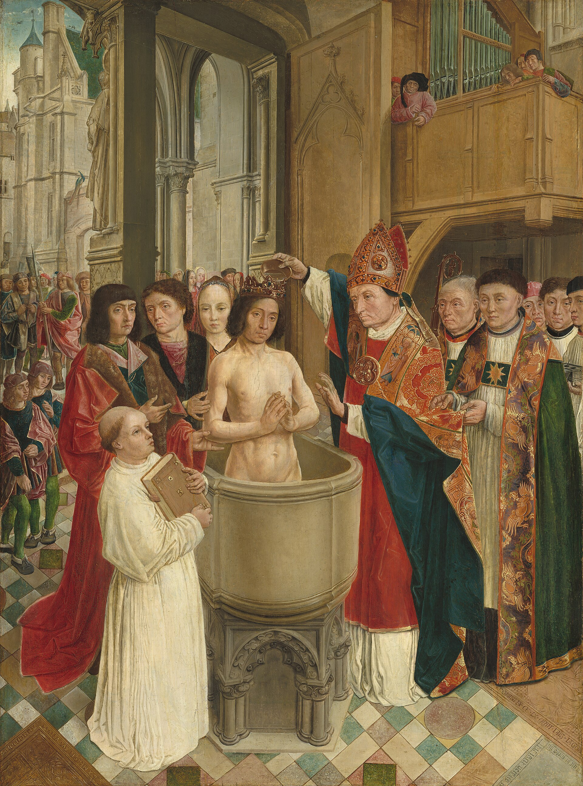
Source
Master of Saint Giles, Chlodwigs taufe, Wikimedia Commons. Licence : Domaine public.Le baptême de Clovis est un acte fondateur de l'Occident chrétien. D'après Grégoire de Tours, Clovis (le roi des Francs) se convertit en raison de la demande et de l'insistance de sa femme Clotilde. Au cours d'une bataille difficile à Tolbiac (en 496), les Francs repoussent difficilement une attaque des Alamans. Pendant la bataille, Clovis aurait imploré le secours de Dieu en échange de sa conversion. En même temps, les Francs sont attirés par la très riche Aquitaine, aux mains des Wisigoths (qui ne sont pas chrétiens). Ils auraient ainsi l'appui de la population chrétienne de la région et seraient sans doute mieux acceptés comme nouveaux dirigeants.
La société médiévale
Les trois ordres au Moyen Âge
La société médiévale est une société organisée autour de trois ordres :
- ceux qui prient : les hommes d'Église ou le clergé;
- ceux qui font la guerre : les nobles (princes, seigneurs, chevaliers);
- ceux qui travaillent : les paysans.
Il s'agit d'une classification qui se rapproche de celle des trois ordres de la société d'Ancien Régime : clergé, noblesse et tiers état. Ces trois ordres ont été redéfinis par Adalbéron de Laon vers 1020, puis par Gérard de Cambrai, qui souhaitaient ce type d'organisation sociale alors que la France connaissait une crise politique autour de l'an mille (1000).
La féodalité et le lien de vassalité
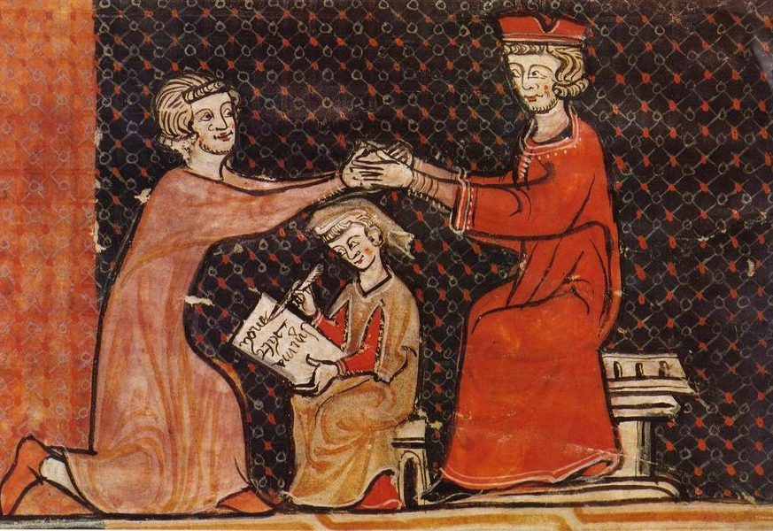
Source
Auteur inconnu, Hommage au Moyen Age - miniature, Wikimedia Commons. Licence : Domaine public.Entre suzerain et vassal, il existe un réseau de devoirs. Le suzerain protège son vassal, le vassal aide et conseille son suzerain. Ces termes recouvrent des notions précises. Aide et conseil du vassal sont soigneusement codifiés : l'aide peut être une contribution financière, mais elle est pratiquement toujours militaire, avec un service de quarante jours. Le conseil, c'est être présent à la cour du seigneur et, parfois, siéger à son tribunal. La protection accordée par le seigneur est militaire, mais elle est aussi économique, par l'octroi du fief.
Un fief est en général une terre avec tous les droits qui y sont attachés : cela peut aller d'un royaume entier à un quart de village. Parfois ce sera un moulin, ou une église, ou même une rente en argent. L'important est que le fief reste la propriété du suzerain, dont le vassal a l'usage. Le schéma suivant résume cette chaîne de dépendances, du roi jusqu'aux paysans. Ces derniers, appelés censitaires parce qu'ils paient le cens, ne sont pas des vassaux : ils reçoivent du seigneur une terre et sa protection en échange du cens, de la taille, des banalités et des corvées.
La seigneurie au Moyen Âge
L'organisation de la seigneurie
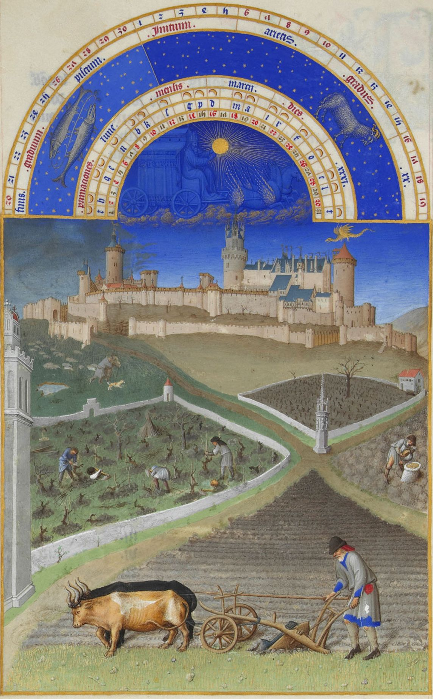
Source
Limbourg brothers / Barthélemy d'Eyck, Les Très Riches Heures du duc de Berry mars, Wikimedia Commons. Licence : Domaine public.Au Moyen Âge, la seigneurie s'organise autour d'un château fort ou d'une abbaye. Sur celle-ci se trouvent un seigneur et sa famille, des paysans qui travaillent dans les champs ainsi que des artisans qui produisent de nombreux outils et objets du quotidien. Paysans et artisans vivent dans des villages, dans lesquels se dresse l'église.
Des paysans dépendants du seigneur
Les paysans ont plusieurs obligations envers leur seigneur. En effet, ils doivent :
- payer le cens (location de sa terre);
- payer la taille (impôt perçu lorsque le seigneur le souhaite);
- payer les banalités (taxes perçues lors de l'utilisation du moulin, du four, du pressoir, etc.);
- réaliser les corvées (l'entretien du château, des routes et des ponts, le curage des fossés, etc.). En échange de tout cela, le seigneur s'engage à octroyer une terre aux paysans et à leur assurer sa protection en cas d'attaque.
L'exemple de la Saint-Jean
« À la Saint-Jean (24 juin), les paysans de Verson doivent faucher l'herbe des prés du seigneur et porter le foin au manoir. Après, ils doivent curer le canal. En août, ils doivent moissonner les blés du seigneur et les porter à sa grange. Ils doivent le champart sur leurs terres. Ils le chargent sur leurs charrettes et le portent à la grange du seigneur. Après, vient le début septembre, où ils paient le porçage : le vilain gardera deux pourceaux sur trois. Et après vient la Saint-Denis (9 octobre), où les vilains sont tout étonnés qu'il leur faille payer le cens. Après, ils doivent encore la corvée : quand ils auront labouré la terre du seigneur, ils iront chercher le blé à son grenier et ils devront le semer. À Noël, ils doivent des poules. À Pâques, ils doivent de nouveau la corvée. » (D'après la Complainte des Vilains de Verson, 13e siècle)
L'organisation du clergé
Les types de clergé
Le clergé séculier est le clergé qui vit « dans le siècle » (du latin saecularis), au milieu des laïcs. Les membres du clergé séculier ont pris des engagements religieux, mais leur principale caractéristique est d'être engagés dans la vie séculière et non en communauté. Le terme clergé séculier regroupe généralement les prêtres, les chanoines, etc.
Le clergé régulier vit « selon une règle » de vie (du latin regularis) d'un ordre, d'une abbaye, d'un couvent ou d'un prieuré. Le clergé régulier s'engage dans les trois voeux de chasteté, de pauvreté et d'obéissance.
Les cathédrales
L'église romane, avant la cathédrale gothique
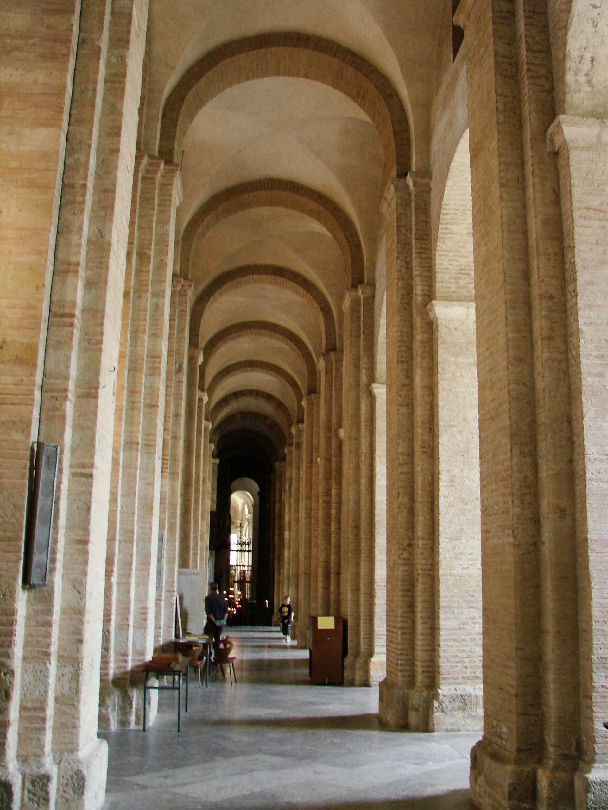
Source
Guérin Nicolas ( messages ) 16:56, 7 September 2008 (UTC), Basilique Saint-Sernin Toulouse 05, Wikimedia Commons. Licence : Creative Commons BY-SA 3.0.Avant les grandes cathédrales gothiques, l'Occident bâtit des églises romanes, surtout entre le 10e et le 12e siècle. L'église romane se reconnaît à ses arcs en plein cintre, en demi-cercle, et à ses voûtes de pierre en berceau, très lourdes : pour les soutenir, il faut des murs épais, renforcés de contreforts, percés de petites fenêtres. L'intérieur reste donc sombre et massif, à l'image de Saint-Sernin de Toulouse.
L'église romane. Arcs en plein cintre, voûtes en berceau, murs épais et contreforts, petites fenêtres, intérieur sombre, silhouette basse et massive.
La cathédrale gothique. Arcs brisés et voûtes sur croisée d'ogives, arcs-boutants, murs allégés, immenses fenêtres et vitraux, intérieur haut et lumineux.
Qu'est-ce qu'une cathédrale?
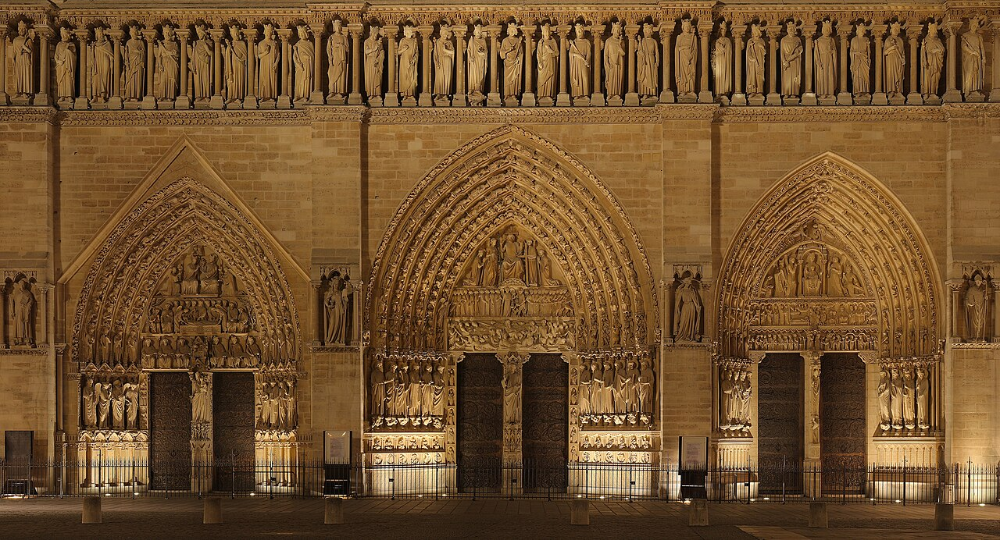
Source
Benh LIEU SONG, Notre Dame Paris front facade lower, Wikimedia Commons. Licence : Creative Commons BY-SA 3.0.Une cathédrale, au Moyen Âge comme aujourd'hui, ne se distingue pas radicalement d'une grosse église : c'est une église où siège un évêque chargé d'un diocèse. Le mot d'ailleurs fait référence à la cathèdre, fauteuil avec accoudoirs sur lequel s'assoit l'évêque. Les cathédrales ont la forme d'une croix. Les fidèles se tiennent dans la nef, entre les murs principaux. Accrochée au mur ou à un pilier se trouve la chaire (synonyme de cathèdre), depuis laquelle l'évêque fait son sermon. Le choeur est installé à l'ouest avec l'autel, table monumentale derrière laquelle le prêtre dit la messe.
Les voûtes d'ogive et les arcs-boutants
Une voûte d'ogive est un élément architectural en forme d'arc diagonal de renfort (nervure anciennement appelée ogive) bandé sous la voûte gothique, dont il facilite la construction et dont il reporte la poussée vers les angles, permettant d'ouvrir largement les murs latéraux. Élément fondamental dans l'architecture gothique, elle apparaît entre 1180 et 1220, et couvre d'abord les cathédrales d'Île-de-France. Les arcs-boutants ont été construits pour prendre le relais des tirants et maintenir les voûtes en place. Il arrivait, malheureusement, que les voûtes tombent après quelques années. C'est pour cela que l'utilisation des arcs-boutants a vu le jour.
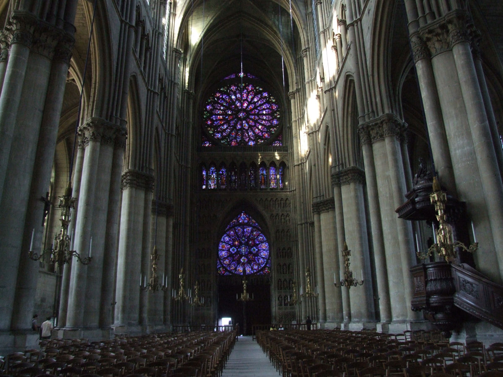
Source
Mattana, Reims Cathedrale Notre Dame interior 001, Wikimedia Commons. Licence : Domaine public.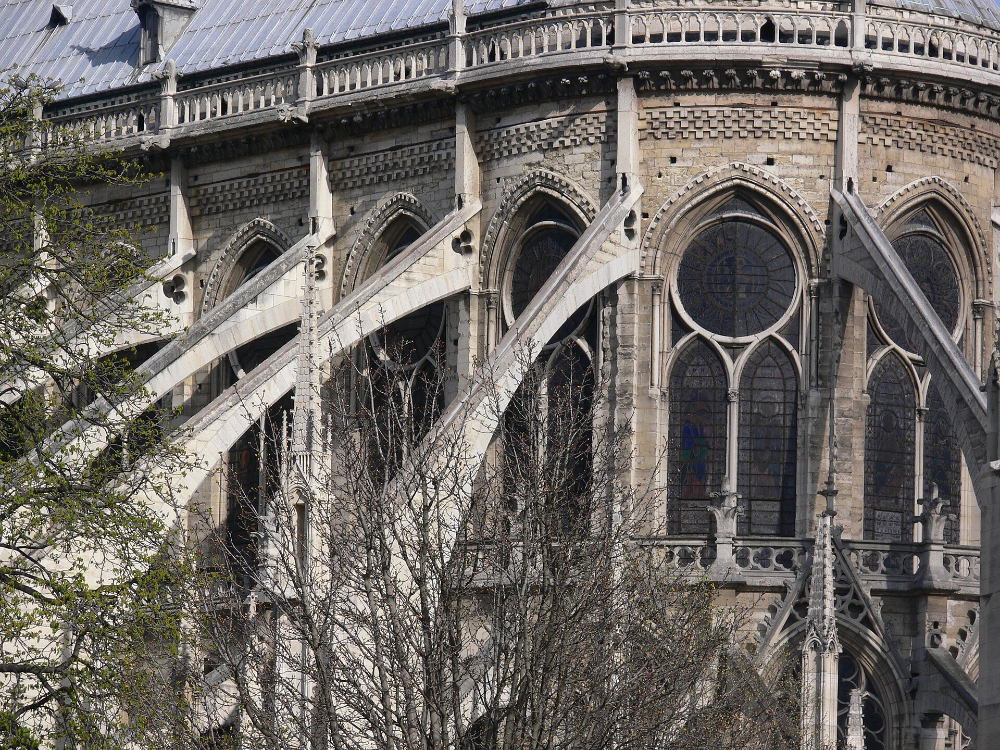
Source
Andreas Praefcke, Notre-Dame de Paris arcs-boutants, Wikimedia Commons. Licence : Creative Commons BY 3.0.L'Église, l'éducation et les savoirs
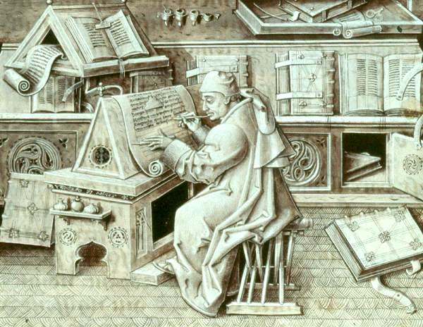
Source
Jean Le Tavernier, Escribano, Wikimedia Commons. Licence : Domaine public.Au Moyen Âge, l'Église est à peu près la seule à offrir de l'éducation. Les monastères et les cathédrales tiennent des écoles : les écoles monastiques forment d'abord les futurs moines, tandis que les écoles cathédrales, installées près des cathédrales et dirigées par l'évêque, accueillent les clercs et quelques fils de familles aisées. On y apprend à lire, à écrire et à compter en latin, la langue commune de tous les gens instruits d'Occident. Aux 12e et 13e siècles, les plus grandes écoles cathédrales donneront naissance aux premières universités, comme celles de Bologne, de Paris et d'Oxford.
Les monastères jouent aussi un rôle essentiel dans la conservation des savoirs. Dans une salle appelée le scriptorium, les moines copistes recopient à la main, pendant des mois, les livres religieux, mais aussi les oeuvres des auteurs grecs et romains de l'Antiquité. Sans l'imprimerie, qui n'existe pas encore, chaque livre est une pièce unique et précieuse : c'est grâce à ce patient travail de copie que de nombreux textes anciens se sont rendus jusqu'à nous. Les bibliothèques des monastères comptent ainsi parmi les plus grands trésors culturels du Moyen Âge.
Les croisades
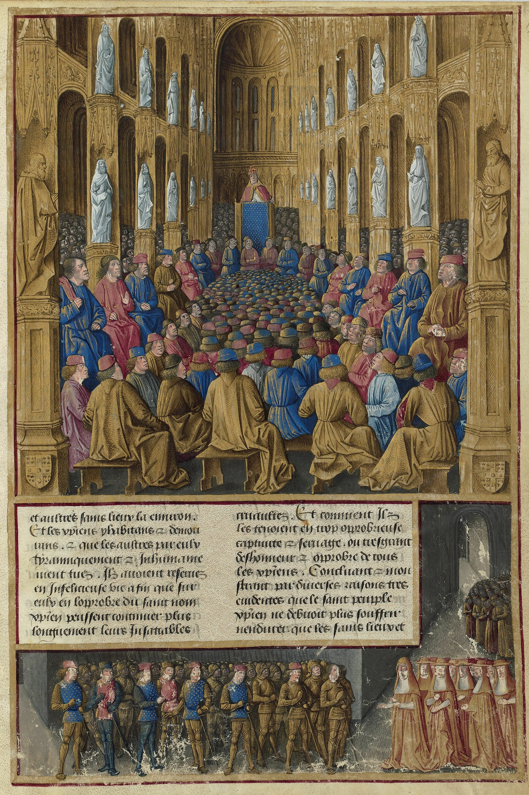
Source
Jean Colombe, Passages d'outremer Fr5594, fol. 19r, Concile de Clermont, Wikimedia Commons. Licence : Domaine public.Les croisades du Moyen Âge sont des expéditions militaires organisées par l'Église pour la délivrance de la Terre sainte. Elles ont été prêchées par le pape, par une autorité spirituelle de l'Occident chrétien comme Bernard de Clairvaux ou par un souverain comme Frédéric Barberousse. Elles furent lancées pour retrouver l'accès aux lieux de pèlerinage chrétiens en Terre sainte.
La vie éternelle
En 880, le pape Jean VIII a fait une déclaration qui allait prendre beaucoup d'ampleur pendant les croisades. Il a en effet déclaré que les guerriers qui mouraient en combattant des païens auraient assurément la vie éternelle. Cette conviction incitait les jeunes chevaliers, les nobles et les paysans à s'investir avec vigueur dans la lutte aux païens.
Le fanatisme religieux
Au 11e siècle, l'Église chrétienne devenait de plus en plus forte et de plus en plus structurée. Les dirigeants de l'Église rendus puissants rêvaient d'étendre leur pouvoir. Ces rêves étaient amplifiés par les victoires des chrétiens d'Occident, dont celle qui avait repoussé les musulmans de l'Espagne.
L'appel à la croisade
En 1095, plusieurs représentants de l'Église sont réunis à Clermont. À la fin du concile, le pape Urbain II lance un appel à la population dans lequel il invite les chevaliers à aller délivrer les terres saintes et le tombeau du Christ. Dans son discours, Urbain II promettait d'accorder des indulgences (rémission de tous les péchés) à tous ceux qui perdraient la vie dans ces combats. Tous les chrétiens étaient ainsi invités à prendre les armes au service de leur foi. C'est pourquoi les croisés (chevaliers chrétiens qui participaient aux croisades) portaient des vêtements sur lesquels une croix était cousue.
(Source : Alloprof)
Le bilan des croisades
Sur le plan culturel, les croisades ont fait augmenter le ressentiment éprouvé à l'endroit des Occidentaux. À cause de l'attitude des Francs, les musulmans ont commencé à se méfier du christianisme (d'Orient et d'Occident), ce qui n'a fait qu'augmenter la discrimination des musulmans envers les chrétiens. Sur le plan économique, tout au long des croisades, les marchands n'ont jamais cessé de faire des échanges commerciaux avec les peuples étrangers. Ces échanges favorisaient l'approvisionnement de plusieurs denrées. Ces marchands venaient de Venise, de Gênes, de Pise, de Salerne ou de Palerme. La péninsule italienne profitait d'une position avantageuse pour les voyages en mer.
Le commerce n'a pas été affecté outre mesure par les croisades. De plus, ces croisades n'ont pas eu d'impact majeur sur le développement économique de l'Occident. Elles ont facilité le développement des premières banques, mais elles ne sont pas la seule cause de ce développement.
Un procès anecdotique
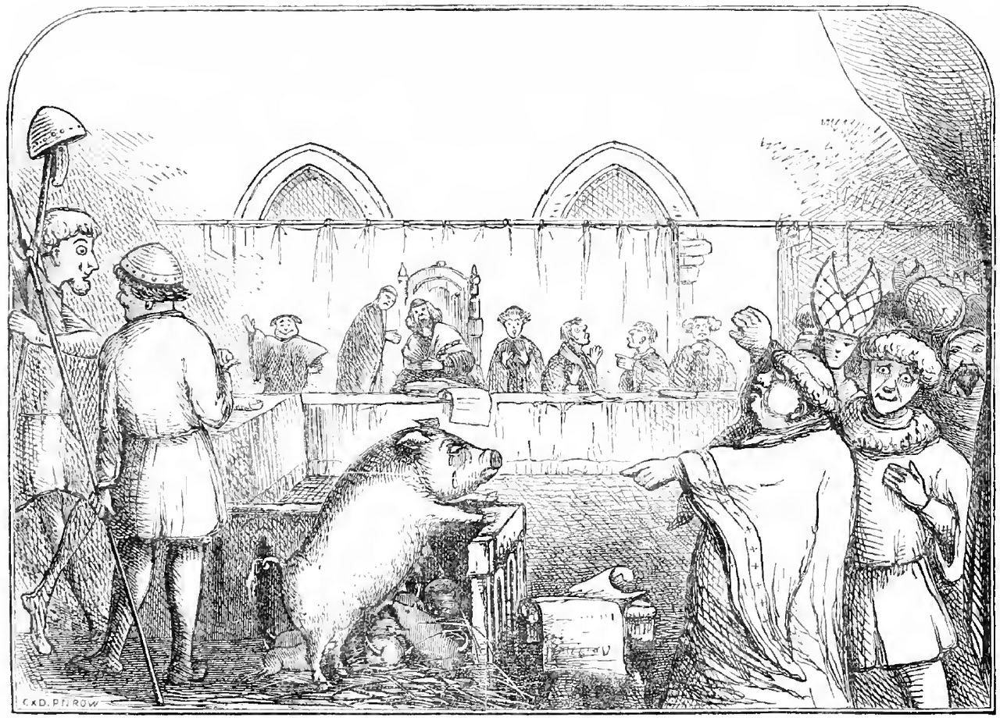
Source
Unknown author Unknown author, Trial of a sow and pigs at Lavegny, Wikimedia Commons. Licence : Domaine public.Au Moyen Âge et bien après, on condamna à la potence ou au bûcher des cochons, des truies ou des vaches. De même, l'Église étendit ses excommunications des hommes aux animaux : rats, mouches, sauterelles, taupes, poissons; tout membre de la faune pouvait y succomber. L'illustration représente une truie et ses porcelets jugés pour le meurtre d'un enfant. Le procès aurait eu lieu en 1457, la mère étant reconnue coupable et les porcelets acquittés.
Des applications pour t'exercer
Sources
- Service national du RÉCIT en univers social
- Alloprof, La christianisation de l'Occident au Moyen Âge
- Encyclopédie Larousse, Moyen Âge
- Wikipédia
- Complainte des Vilains de Verson, 13e siècle